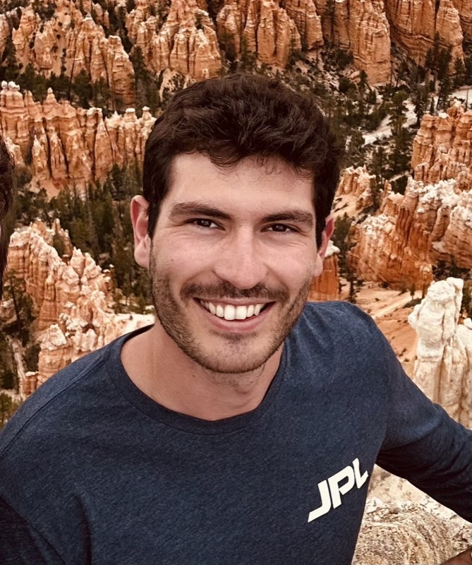

Valentin Gaucher
PhD Student, Robotics and Intelligent SystEms Laboratory (RISE) - Arizona State University
Roboticist and aerospace engineer working on data-driven and nonlinear MPC for aerial robots in contact-rich, interactive environments. I leverage advances in computation and embedded electronics to build robotic systems that are safer, smarter, and more agile.
Before ASU I obtained my Master's degree from ISAE-SUPAERO (France) in Aeronautics & Space Engineering. I completed my Master's thesis at NASA Jet Propulsion Laboratory . I am currently advised by Professor Wenlong Zhang.
Research interests
- Aerial robotics for extreme environments — Deployment, sensing, and control of aerial robots in extreme environments. Investigating tactile based planning and sensing methods for planetary exploration, sample recovery and search and rescue.
- Interaction-Rich Optimal Control and Representation — Planning and control that let dynamical systems survive, leverage or recover from contact. This include collision recovery, contact-aware optimal planning, landing and takeoff, and contact modeling.
- Real-time control and experimental validation — Deployment of real-time optimal control methods on flight hardware and high-fidelity simulation (MuJoCo, ROS2, PX4), with a focus on closing the simulation-to-real gap.
News
- July 2026 — Paper accepted at Conference on Decision and Control. To be presented at IEEE Conference on Decision and Control 2026 .
- June 2026 — Paper accepted at IEEE Control Systems Letters. Avaible Here. To be presented at IEEE Conference on Decision and Control 2026